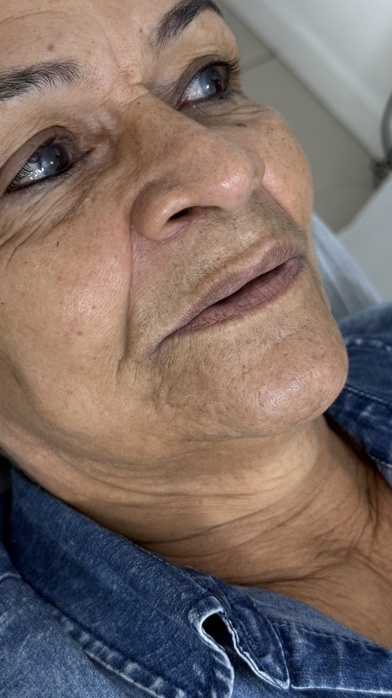
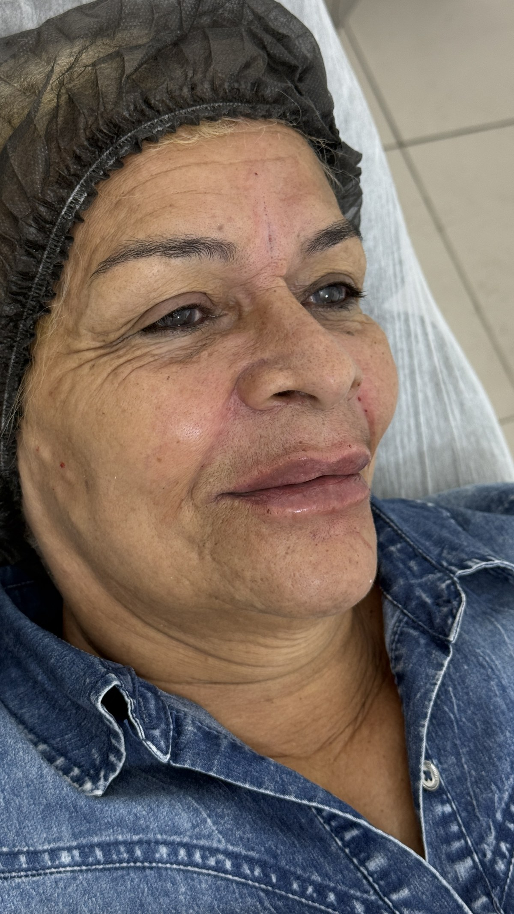

Existe uma distinção que faço questão de trabalhar na avaliação de cada paciente que chega com queixa labial: a diferença entre um lábio que perdeu volume e um lábio que perdeu tonicidade. São condições diferentes, com causas diferentes, e que exigem soluções diferentes. Confundi-las é o caminho mais curto para um resultado insatisfatório.
O lábio que perdeu volume responde bem ao preenchimento com ácido hialurônico. Já o lábio com flacidez real, com excesso de pele, com rugas finas na superfície e com ptose do contorno, não se beneficia do mesmo jeito. Colocar volume em um tecido frouxo costuma amplificar a aparência de flacidez, não corrigi-la.
Para esses casos, trabalho com fios de PDO. Não é o procedimento que faço na maioria dos casos, mas é o que faz sentido quando o diagnóstico aponta para flacidez como problema central.
O que são os fios de PDO
PDO significa polidioxanona, um polímero sintético biodegradável amplamente usado em cirurgia como fio de sutura absorvível há mais de 30 anos. Na estética, ele foi adaptado para uso dérmico: fios finos são inseridos na pele com agulhas ou cânulas para promover tensionamento mecânico imediato e estimular a produção de colágeno ao longo das semanas seguintes.
Existem três tipos principais de fios PDO: os lisos, que estimulam colágeno de forma difusa; os torcidos ou espiculados, com ancoragem lateral que produz maior tensionamento; e os com barfarpas, usados para lifting mais pronunciado. Para aplicação nos lábios, os fios lisos e os torcidos são os mais utilizados, dependendo do grau de flacidez e do objetivo clínico.
Por que os fios funcionam onde o preenchimento não resolve
O preenchimento adiciona volume dentro de um compartimento. Se esse compartimento está com a parede frouxa, o volume vai se distribuir de forma irregular e pode inclusive escorregar. Os fios atuam na parede em si: tensionam o tecido, estimulam colágeno estrutural e restauram a firmeza que sustenta qualquer procedimento feito depois. É a diferença entre mobiliar uma casa com paredes frágeis e primeiro reforçar a estrutura.
Como é o procedimento nos lábios
A aplicação começa com anestesia tópica e bloqueios locais na região perioral. Quando o tecido está adequadamente anestesiado, os fios são inseridos com agulhas finas em plano intradérmico, seguindo a anatomia labial: ao longo do vermelhão, do filtro, ou distribuídos em malha para tensionamento difuso da pele ao redor da boca, dependendo do padrão de flacidez presente.
O efeito mecânico é imediato: os fios criam uma rede de suporte que organiza o tecido frouxo. Nas semanas seguintes, o processo de degradação do PDO estimula os fibroblastos locais a produzirem colágeno ao redor do fio, reforçando progressivamente o que o tensionamento mecânico iniciou.
A sessão dura entre 30 e 50 minutos. Após o procedimento, pode haver edema, leve equimose e sensação de tensão local, que se resolvem em 7 a 14 dias.
O caso que trouxe este artigo
Atendi recentemente uma paciente com queixa de lábios "envelhecidos", com flacidez progressiva, rugas finas ao redor da boca e perda de definição do contorno. Ela havia tentado preenchimento anteriormente e relatou que o resultado não havia correspondido às expectativas, o que é muito comum nesse perfil.
Na avaliação, ficou claro que o problema central era flacidez, não falta de volume. O tecido estava frouxo, com excesso de pele na superfície labial e ptose do contorno. Indicar mais volume nessa condição seria um erro técnico. A indicação correta era tratar a flacidez primeiro.
Realizei o protocolo de fios PDO lisos e torcidos em plano intradérmico, distribuídos ao longo do vermelhão e na região perioral. As fotos abaixo mostram o antes e o logo após o procedimento.


Resultado imediato após o procedimento. A evolução continua ao longo das semanas seguintes com a produção progressiva de colágeno. Paciente atendida na Clínica Dr. Gustavo Martins, Rio de Janeiro.
Quando indico fios PDO nos lábios
Esse não é um procedimento que faço rotineiramente em qualquer queixa labial. É uma ferramenta para situações específicas, e a indicação parte sempre de uma análise cuidadosa do tecido e das expectativas do paciente.
Os cenários em que considero os fios PDO como primeira ou principal escolha para os lábios são:
- Flacidez labial com excesso de pele: quando o tecido perdeu tonicidade e a superfície do lábio apresenta pele amolecida, com rugas finas que não respondem a hidratantes ou tratamentos superficiais
- Ptose do contorno labial: quando a borda do vermelhão perdeu definição por queda do tecido, não por falta de volume
- Rugas periorais difusas: em combinação ou como preparação para outros procedimentos, os fios melhoram a qualidade do tecido ao redor da boca
- Insatisfação prévia com preenchimento: pacientes que já tentaram ácido hialurônico e não tiveram o resultado esperado frequentemente têm flacidez como problema não endereçado. Os fios reorganizam o tecido antes de qualquer novo preenchimento
- Contraindicação relativa ao preenchimento: pacientes que preferem evitar ou reduzir o uso de ácido hialurônico por histórico de reação ou outros fatores
O que não é indicação para fios PDO nos lábios
Com a mesma clareza com que descrevo quando uso, preciso dizer quando não uso. Os fios PDO nos lábios não são indicados como substitutos do preenchimento em lábios com perda de volume sem flacidez, em casos onde o objetivo é aumento de volume ou projeção, ou em pacientes com expectativas de resultado dramático e imediato. Nesses casos, o ácido hialurônico é a ferramenta certa.
A indicação errada do procedimento leva a resultados frustrantes dos dois lados: o profissional aplica uma técnica tecnicamente correta, mas no problema errado.
Combinação com outros procedimentos
Na maioria dos casos que trato com fios PDO labiais, o protocolo não termina nos fios. Após o período de cicatrização e estabilização do resultado, geralmente entre 4 e 6 semanas, avaliamos a necessidade de complementação com ácido hialurônico em volumes pequenos para refinar a projeção e a definição do contorno.
Essa sequência, fios primeiro para reorganizar o tecido, preenchimento depois para refinar o resultado, produz uma qualidade de resultado que nenhum dos dois sozinhos conseguiria. O tecido agora tem substrato, e o preenchimento tem onde se apoiar.
Perguntas frequentes
Fios PDO nos lábios substituem o preenchimento?
Não são procedimentos concorrentes. Os fios PDO tratam a flacidez e o excesso de pele labial, enquanto o preenchimento adiciona volume e define bordas. Em muitos casos, a sequência ideal é usar os fios primeiro para reorganizar a estrutura e, quando necessário, complementar com ácido hialurônico depois.
Fios PDO nos lábios dói?
O procedimento é feito com anestesia tópica e bloqueios locais, tornando-o bem tolerado pela maioria dos pacientes. No pós-procedimento imediato pode haver edema, sensibilidade e pequenas irregularidades que se resolvem em 7 a 14 dias.
Quanto tempo dura o resultado dos fios PDO nos lábios?
O fio de PDO é absorvido em aproximadamente 6 meses, mas o colágeno produzido ao seu redor persiste por mais tempo. O efeito de tensionamento e melhora da qualidade da pele labial costuma durar entre 12 e 18 meses.
Para quem os fios PDO nos lábios são indicados?
Principalmente para pacientes com flacidez labial real: lábios que perderam tonicidade, têm excesso de pele com rugas finas na superfície, ou apresentam ptose do contorno labial. Também são indicados quando o preenchimento convencional já foi tentado e não trouxe o resultado esperado por falta de suporte tecidual.
Existe risco de resultado artificial?
Quando bem indicados e aplicados, os fios PDO produzem um resultado sutil e progressivo, não abrupto. O tensionamento inicial se ameniza nos primeiros dias. O risco de resultado artificial é baixo e está mais relacionado à indicação incorreta do procedimento do que à técnica em si.
Referências
- Suh DH, Jang HW, Lee SJ, et al. Outcomes of polydioxanone knotless thread lifting for facial rejuvenation. Dermatol Surg. 2015;41(6):720-725.
- Savoia A, Accardo C, Vannini F, et al. Outcomes in thread lift for facial rejuvenation: a study performed with happy lift revitalizing. Dermatol Ther. 2014;4(1):103-114.
- Ogilvie P, Safa M, Chantrey J, et al. Aesthetic outcomes following treatment of perioral lines and lip augmentation with hyaluronic acid filler. J Cosmet Dermatol. 2020;19(9):2284-2291.
Tem dúvidas sobre qual tratamento é certo para os seus lábios?
Flacidez e perda de volume são problemas diferentes que precisam de soluções diferentes. A avaliação começa com o diagnóstico correto.